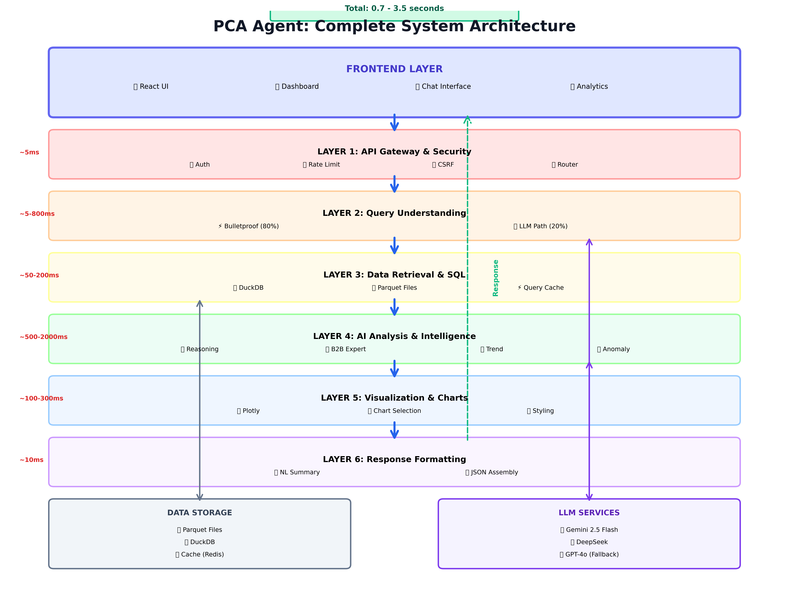
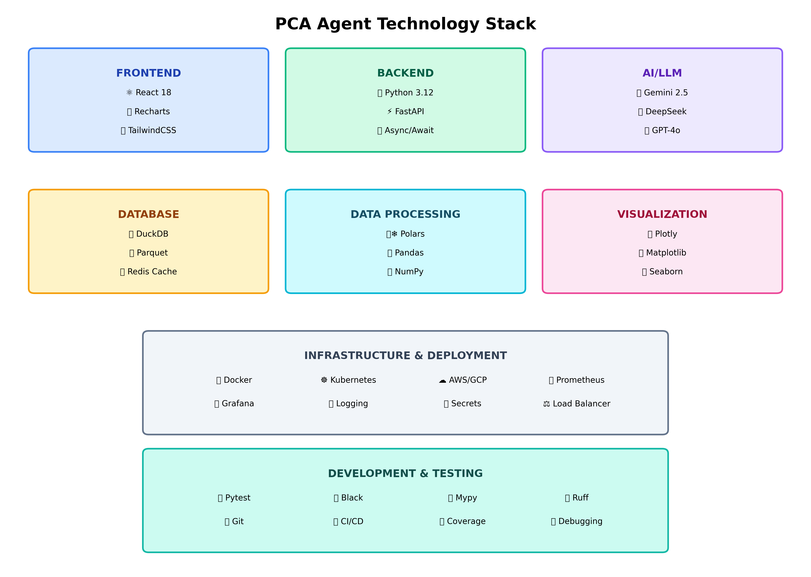
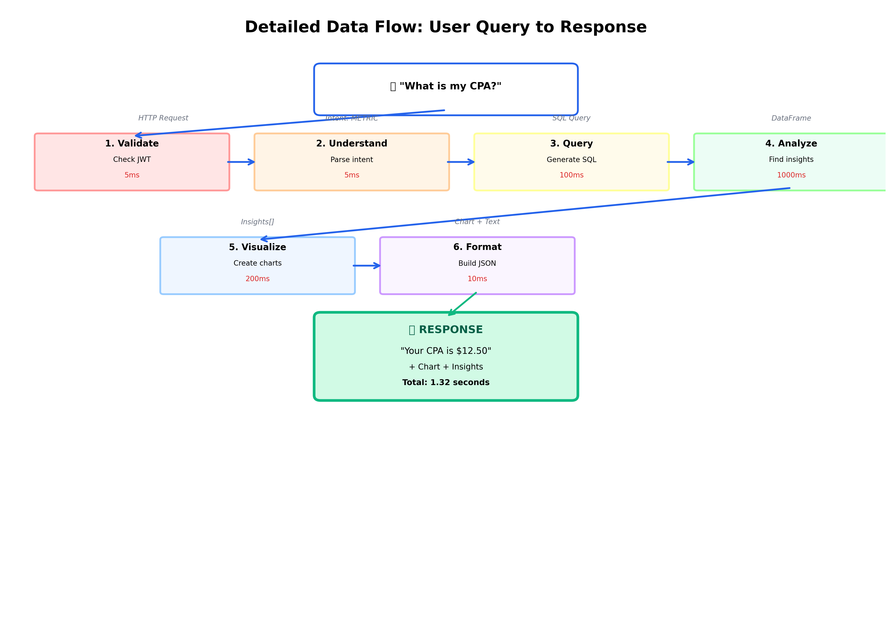
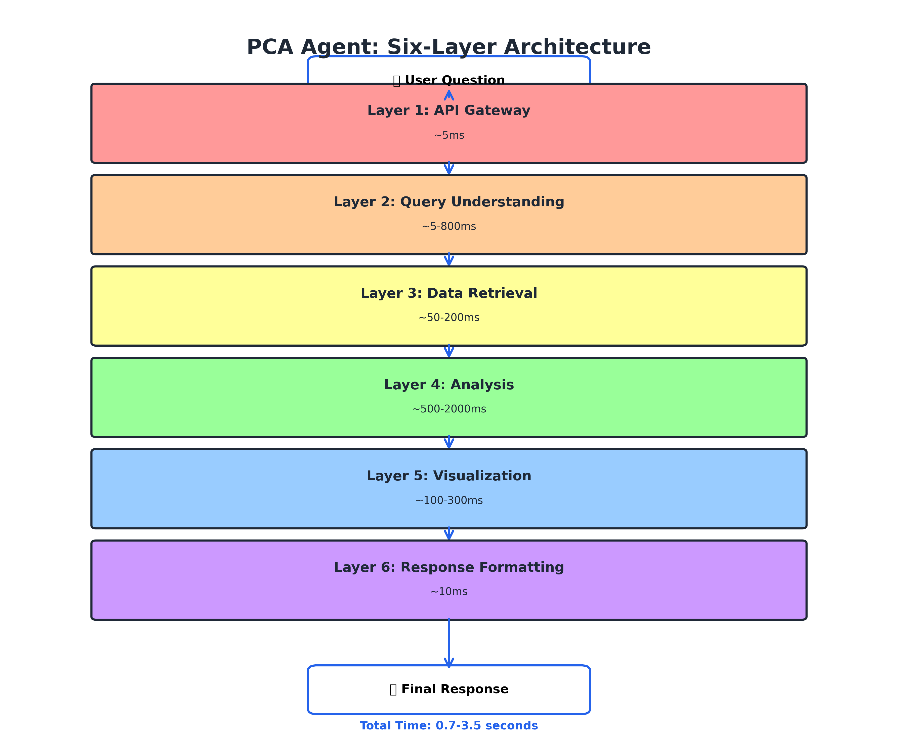
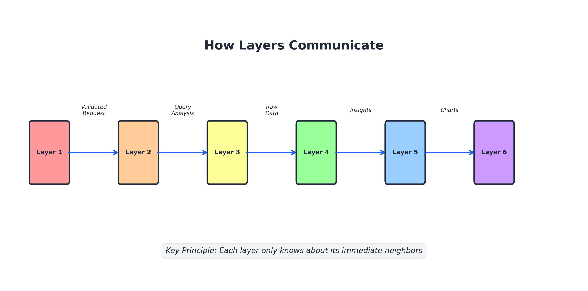
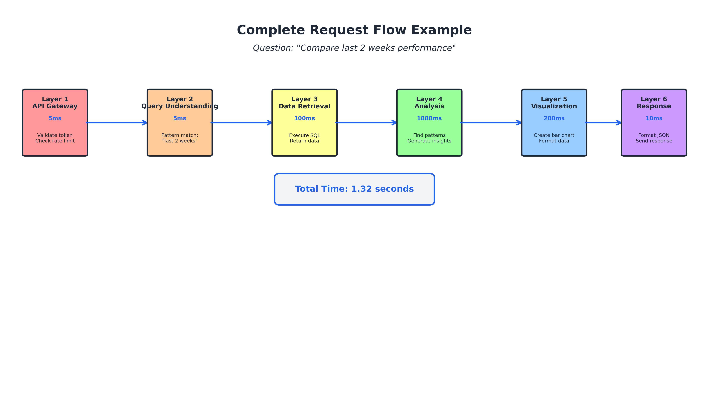
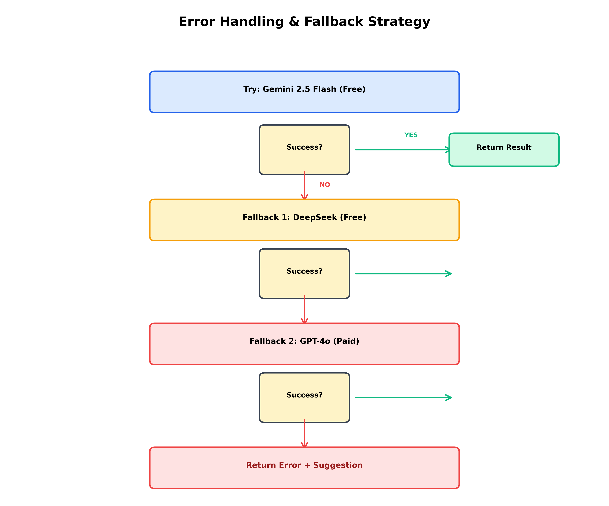
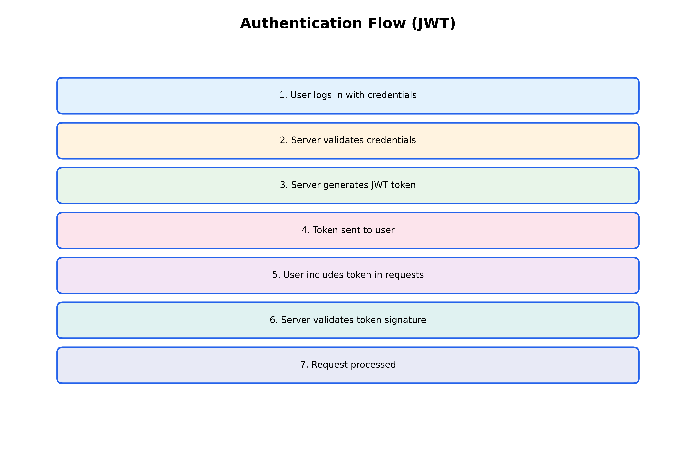
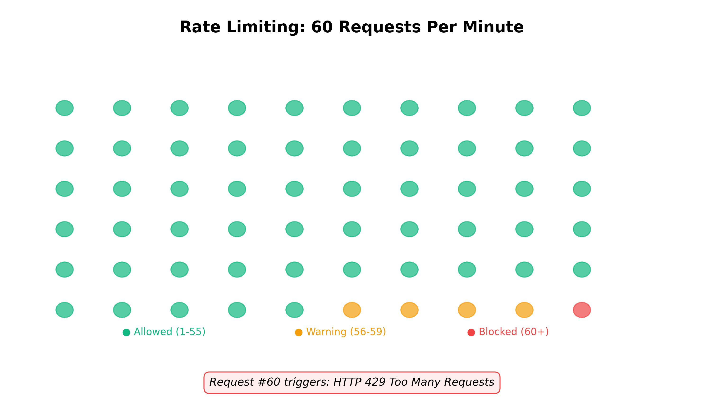
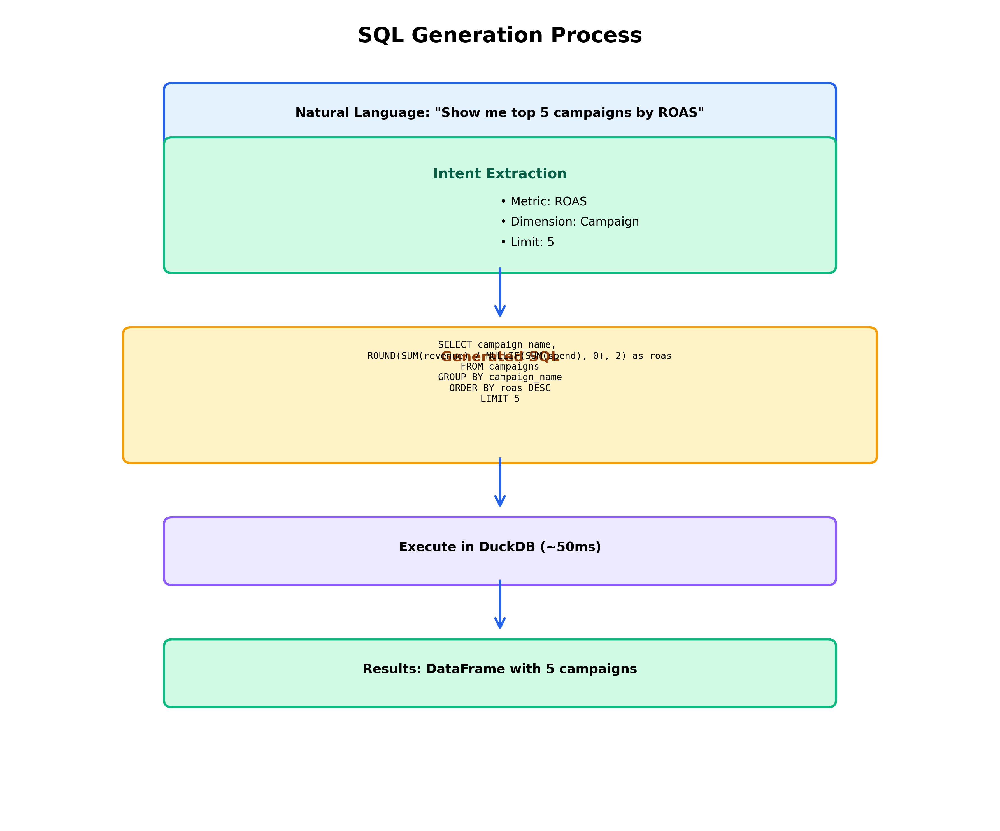

January 2026
CHAPTER 1
INTRODUCTION & OVERVIEW
Navigation: ← Index | Chapter 2 →
The Performance Campaign Analytics (PCA) Agent represents a paradigm shift in marketing analytics, enabling natural language interaction with complex campaign data. This system eliminates the traditional dependency on data analysts for routine queries by leveraging artificial intelligence to understand questions, generate SQL queries, analyze results, and present insights through interactive visualizations.
Core Value Proposition: Transform hours-long analytical workflows into second-long conversational interactions while maintaining accuracy and depth of insight.
Office Analogy: Imagine you have a super-efficient assistant who knows everything about your marketing campaigns. Instead of waiting days for the analytics team to prepare a report, you just ask your assistant “How much did we spend last week?” and they instantly pull up the answer with charts. That’s what the PCA Agent does.
The PCA Agent is an enterprise-grade AI system designed to democratize access to marketing performance data. Users interact with the system using natural language queries, receiving comprehensive responses that include numerical answers, visual charts, and actionable insights.

Example Interaction:
User Query: “What is my CPA for last week?”
System Response: “Your Cost Per Acquisition last week was $12.50, representing an 8% decrease from the previous week. This improvement is primarily driven by increased conversion rates in your Facebook campaigns.”
The response includes: - Numerical answer with context - Trend comparison - Root cause analysis - Interactive visualization
Real-World Example: Think of asking Siri or Alexa a question, but instead of weather or music, you’re asking about your marketing data. You speak naturally (“What’s my CPA?”) and get an intelligent answer back, not just raw numbers.
The conventional marketing analytics process involves multiple stakeholders and significant time delays:
Office Analogy: This is like needing to file a formal request with HR every time you want to know your vacation balance. You submit a ticket, wait for someone to look it up, wait for them to create a report, and finally get an email days later. Frustrating and slow!
Key Challenges: - Time Inefficiency: 4-48 hour turnaround for simple queries - Resource Constraints: Requires dedicated analyst time - Iteration Friction: Follow-up questions restart the entire cycle - Static Outputs: Reports become outdated quickly
The PCA Agent compresses this multi-day workflow into a sub-second interaction:
Office Analogy: Now imagine you have a self-service portal where you can instantly check your vacation balance, request time off, and see approval status - all in seconds. That’s the transformation the PCA Agent brings to marketing analytics.
Quantified Benefits: - Speed: 99% reduction in time-to-insight (hours → seconds) - Cost: 80% reduction in analyst workload for routine queries - Accessibility: Non-technical users gain data independence - Interactivity: Real-time exploration with dynamic visualizations
The PCA Agent employs a six-layer architecture, where each layer performs a distinct function in the request-response lifecycle. This modular design ensures maintainability, testability, and scalability.
Office Analogy - The Document Processing Chain:
Imagine you submit an expense report at your company. It goes through multiple departments: 1. Reception (Layer 1): Checks if you’re an employee and if the form is complete 2. Classification (Layer 2): Determines what type of expense (travel, meals, equipment) 3. Data Entry (Layer 3): Pulls up your records and budget information 4. Analysis (Layer 4): Checks if it’s within policy, compares to your budget 5. Presentation (Layer 5): Creates an approval form with all details 6. Delivery (Layer 6): Sends you an email with the decision
Each department has one job, and they pass the work to the next department. That’s exactly how the PCA Agent’s layers work!
Layer Hierarchy:
| Layer | Function | Office Department Analogy |
|---|---|---|
| Layer 1 | API Gateway | Reception / Security Desk |
| Layer 2 | Query Understanding | Mail Room (sorts & routes) |
| Layer 3 | Data Retrieval | Records Department |
| Layer 4 | Analysis | Analysis Team |
| Layer 5 | Visualization | Graphics Department |
| Layer 6 | Response Assembly | Executive Summary Writer |
Each layer maintains strict input/output contracts, enabling independent optimization and testing.

Large Language Models (LLMs):
What is an LLM? A Large Language Model is an artificial intelligence system trained on vast amounts of text data (books, websites, code) that can understand and generate human-like text.
Office Analogy: Imagine you hire someone who has read every business book, every marketing guide, and every data analysis manual ever written. They’ve also read millions of reports from other companies. When you ask them a question, they can draw on all that knowledge to give you an intelligent answer. That’s what an LLM does - it’s like having an expert consultant who has “read everything.”
The system employs a tiered LLM strategy to balance cost, speed, and capability:
Selection Logic: The system attempts free models first, escalating to paid models only when necessary, optimizing for cost efficiency.
Why multiple LLMs? Different AI models have different strengths.
Office Analogy: Think of it like having three consultants: - Gemini (Fast & Free): Your in-house analyst who can answer most questions quickly - DeepSeek (Code Specialist): Your IT specialist who’s great at technical queries - GPT-4o (Premium Expert): The expensive external consultant you only call for really complex problems
You try the free in-house people first, and only pay for the expensive consultant when absolutely necessary.
DuckDB:
What is DuckDB? DuckDB is a specialized database designed for analytics. Unlike traditional databases (like MySQL or PostgreSQL) that are optimized for many small transactions (like processing credit card payments), DuckDB is optimized for analyzing large amounts of data quickly.
Office Analogy - The Filing System:
Traditional Database (MySQL): Like a bank teller’s cash drawer. Perfect for handling thousands of small, quick transactions (deposits, withdrawals). Every transaction is carefully recorded one at a time.
DuckDB: Like a research library’s archive system. Not great for individual transactions, but excellent when you need to analyze thousands of documents at once. “Show me all expense reports from last year where travel costs exceeded $5,000” - DuckDB can scan through millions of records in seconds.
The Difference: If you need to process one credit card payment, use a traditional database. If you need to analyze a year’s worth of sales data, use DuckDB. It’s 10-100x faster for analytics!
An in-memory analytical database engine providing: - 10-100x performance improvement over traditional RDBMS for analytical workloads - Native Parquet file support (zero-copy data access) - ACID compliance with analytical optimization
What is Parquet? Parquet is a file format specifically designed for storing large datasets efficiently. Instead of storing data row-by-row (like a spreadsheet), it stores data column-by-column.
Office Analogy - The Filing Cabinet:
Row-based storage (Excel): Each employee’s file is stored together. To find “all salaries,” you have to open every single employee file and look at the salary page. Slow!
Column-based storage (Parquet): All salaries are stored together in one drawer, all names in another drawer, all departments in another. To find “all salaries,” you just open the salary drawer. Fast!
This is why Parquet is perfect for questions like “What’s the total spend?” - it only reads the “spend” column, not every row.
Polars & Pandas:
What are Polars and Pandas? These are Python libraries for working with data tables (think Excel spreadsheets, but in code). Pandas has been around longer and is widely used, but Polars is newer and significantly faster.
Office Analogy: - Pandas: Like Microsoft Excel - everyone knows it, lots of plugins, but can be slow with huge files - Polars: Like a new, supercharged spreadsheet app that’s 5-10x faster but not everyone knows how to use it yet
We use Polars for the heavy lifting (processing millions of rows) and Pandas when we need to work with other tools that only understand Pandas.
Complementary data manipulation frameworks: - Polars: High-performance operations on large datasets (5-10x faster than Pandas) - Pandas: Ecosystem compatibility and final formatting
FastAPI:
What is FastAPI? FastAPI is a web framework - the foundation that handles HTTP requests (when you click a button in your browser, it sends an HTTP request). It’s called “Fast” because it’s one of the fastest Python web frameworks available, and “API” because it helps build APIs (Application Programming Interfaces - the way different software systems talk to each other).
Office Analogy - The Receptionist:
When someone calls your office, the receptionist: 1. Answers the phone (receives the request) 2. Asks who they want to talk to (routes the request) 3. Transfers them to the right person (sends to the right handler) 4. Takes a message if needed (handles errors)
FastAPI is like a super-efficient receptionist who can handle hundreds of calls simultaneously without getting confused.
Modern Python web framework selected for: - Asynchronous request handling - Automatic OpenAPI documentation generation - Built-in data validation (Pydantic) - Industry-leading performance benchmarks
What is asynchronous?
Office Analogy - The Restaurant:
Synchronous (Old Way): The waiter takes your order, goes to the kitchen, stands there waiting for your food, brings it back, then takes the next table’s order. One customer at a time. Slow!
Asynchronous (FastAPI Way): The waiter takes orders from 5 tables, submits them all to the kitchen, the kitchen works on them in parallel, and the waiter delivers food as it’s ready. Multiple customers served simultaneously. Fast!
FastAPI works asynchronously, handling multiple user questions at the same time without making anyone wait.
Plotly & Recharts:
What are Plotly and Recharts? These are charting libraries - tools for creating graphs and visualizations. Plotly creates interactive charts on the backend (Python), while Recharts creates them on the frontend (JavaScript in the browser).
Office Analogy: - Plotly: Like having a graphics designer in your office who creates beautiful charts - Recharts: Like having design software on your computer where you can create charts yourself
Interactive means you can hover over data points to see details, zoom in/out, and toggle data series on/off - like a PowerPoint presentation where you can click on charts to explore them.
Interactive charting libraries enabling: - Client-side interactivity (zoom, pan, hover) - Responsive design for multiple screen sizes - Export capabilities (PNG, SVG, PDF)

To illustrate the system’s operation, consider a simple aggregation query:
User Question: “What is my total spend?”
Processing Flow:
What is JWT? JWT (JSON Web Token) is like a digital ID card. When you log in, the system gives you a JWT that proves who you are. Every time you make a request, you show this JWT instead of entering your password again. It contains your user ID and is cryptographically signed so it can’t be forged.
What is intent classification? This is the process of figuring out what you’re trying to do. Are you asking for a total (AGGREGATION)? Comparing two things (COMPARISON)? Looking at trends over time (TREND)? The system classifies your question into one of these categories to know how to answer it.
SELECT SUM(spend) FROM campaigns, returns $1,234,567What is SQL? SQL (Structured Query Language) is the language databases understand. It’s like asking the database a question in its native language.
SELECT SUM(spend) FROM campaignsmeans “add up all the spend values from the campaigns table.”
What is JSON? JSON (JavaScript Object Notation) is a format for structuring data that both humans and computers can easily read. It’s like a standardized way of packaging information. Example:
{"answer": "$1.23M", "chart": {...}}packages the answer and chart together.
Total Latency: 180 milliseconds
Primary Use Cases: - Campaign performance monitoring - Budget allocation decisions - Competitive channel analysis
Value Delivered: Eliminates analyst dependency for routine questions, enabling real-time decision-making.
Primary Use Cases: - Rapid hypothesis testing - SQL query validation - Automated report generation
Value Delivered: Reduces time spent on repetitive queries, allowing focus on strategic analysis.
Primary Use Cases: - High-level KPI monitoring - Strategic performance assessment - Board presentation preparation
Value Delivered: Self-service access to current data without technical barriers.
What is semantic understanding? Semantic means “meaning.” Semantic understanding is the ability to understand what words mean in context, not just match keywords. The system understands that “bleeding money” means “high spend with low returns,” even though those exact words aren’t in the database.
The system interprets colloquial language and domain-specific terminology:
Example: “Show me campaigns that are bleeding money”
Interpretation: High spend combined with low return on ad spend (ROAS < 1.0)
Generated SQL: WHERE spend > 1000 AND roas < 1.0
What is contextual awareness? This is the ability to remember what was discussed earlier in the conversation. Like talking to a human who remembers what you said 30 seconds ago, the system maintains conversation history to understand follow-up questions.
The system maintains conversation history to resolve ambiguous references:
Conversation: - User: “How is Google performing?” - Agent: [Provides Google campaign metrics] - User: “What about Facebook?”
System Understanding: User requests comparative analysis between Facebook and previously discussed Google campaigns.
When users provide incomplete specifications, the system applies reasonable assumptions:
User Query: “Show me performance”
System Assumptions: - Time range: Last 30 days - Metrics: Spend, ROAS, CPA (core KPIs) - Granularity: Daily aggregation
Why defaults matter: Without defaults, you’d have to specify every detail every time. “Show me spend, ROAS, and CPA for the last 30 days, grouped by day” is tedious. The system knows what you probably want and fills in the blanks.
What is fault tolerance? This is the system’s ability to handle errors gracefully. Instead of crashing when something goes wrong, it tries alternative approaches or provides helpful error messages.
The system implements multi-tier fallback mechanisms:
Design Principle: Maximize answer availability while maintaining accuracy.
Compute Resources: - Python 3.12 or higher - Minimum 4GB RAM (8GB recommended) - 2 CPU cores (4 cores recommended)
Data Infrastructure: - DuckDB (bundled with application) - Parquet-formatted campaign data - Optional: PostgreSQL for persistent storage
External Dependencies: - OpenAI API key (for GPT-4o access) - Google AI API key (for Gemini access) - Optional: DeepSeek API key
This guide provides comprehensive technical documentation across twelve chapters:
Chapters 2-8: Detailed examination of each architectural layer, including input specifications, processing logic, component descriptions, and output formats.
Chapter 9: Deep dive into multi-agent orchestration patterns and coordination mechanisms.
Chapter 10: Real-world examples demonstrating complete request flows for various query types.
Chapters 11-12: Advanced features including RAG integration, knowledge graphs, and observability infrastructure.
Appendices: Glossary of technical terms and comprehensive code reference.
Next Chapter: Chapter 2: The Six-Layer Architecture
Navigation: ← Index | Chapter 2 →
CHAPTER 2
THE SIX-LAYER ARCHITECTURE
Navigation: ← Chapter 1 | Index | Next: Chapter 3 →
The PCA Agent is built using a layered architecture where each layer has a single, well-defined responsibility.
Office Analogy - The Assembly Line:
Think of a car manufacturing plant. Each station on the assembly line has ONE job: - Station 1: Install the engine - Station 2: Attach the wheels - Station 3: Paint the body - Station 4: Install the interior - Station 5: Quality inspection - Station 6: Final detailing
Each station is an expert at their one task. If there’s a problem with painting, you only fix Station 3 - you don’t need to touch the engine installation. That’s exactly how the PCA Agent’s layers work!
This design makes the system: - ✅ Easier to understand - Each layer is simple on its own - ✅ Easier to test - Test each layer independently - ✅ Easier to maintain - Fix bugs in one layer without affecting others - ✅ Easier to scale - Optimize slow layers without touching fast ones
Complete Office Analogy - Processing a Purchase Order:
Imagine you submit a purchase order at your company. Here’s the journey:
- Security Desk (Layer 1): Checks your employee badge and verifies you’re authorized to make purchases
- Mail Room (Layer 2): Reads your request and determines what department should handle it (IT equipment? Office supplies? Travel?)
- Records Department (Layer 3): Pulls up your budget, past purchases, and available funds
- Analysis Team (Layer 4): Reviews if this purchase makes sense, compares prices, checks if it’s within policy
- Graphics Department (Layer 5): Creates an approval form with charts showing budget impact
- Executive Assistant (Layer 6): Packages everything into a nice email and sends it to you
Total time: A few seconds instead of days!

Layer Timing:
| Layer | Function | Time | Office Equivalent |
|---|---|---|---|
| Layer 1 | API Gateway | ~5ms | Security checkpoint |
| Layer 2 | Query Understanding | ~5-800ms | Mail room sorting |
| Layer 3 | Data Retrieval | ~50-200ms | Records lookup |
| Layer 4 | Analysis | ~500-2000ms | Analysis team review |
| Layer 5 | Visualization | ~100-300ms | Graphics creation |
| Layer 6 | Response Formatting | ~10ms | Final packaging |
| Total | Complete Response | 0.7-3.5s | Instant approval! |
Time: ~5ms
Purpose: Security checkpoint and traffic director
Office Analogy: The security desk at your office building. They: - Check your ID badge (authentication) - Make sure you’re not entering/exiting too frequently (rate limiting) - Verify you’re not a security threat (CSRF protection) - Direct you to the right floor/department (routing)
What it does: 1. Validates your identity (JWT token) 2. Checks if you’re making too many requests (rate limiting) 3. Protects against attacks (CSRF validation) 4. Routes your request to the right handler
Output: Validated request ready for processing
Read Full Chapter: Layer 1 - API Gateway →
Time: ~5-800ms (depends on path)
Purpose: Figure out what you’re really asking
Office Analogy: The mail room that sorts incoming requests. When you submit a vague request like “I need help with computers,” they figure out: - Do you need a new laptop? (hardware request) - Is your software broken? (IT support ticket) - Do you need training? (HR training request)
They classify your intent and route it to the right department. The PCA Agent does the same with your questions!
What it does: 1. Checks if your question matches a known pattern (fast path - like a pre-printed form) 2. If not, uses an LLM to analyze your question (slow path - like having someone read and interpret your request) 3. Extracts key information: metrics, dimensions, time ranges 4. Classifies the intent: comparison, trend, aggregation, etc.
Output: Structured query analysis
Technical Term - Intent Classification:
What it means: Figuring out what type of question you’re asking
Office Example: - “How much did we spend?” → AGGREGATION (add up totals) - “Compare this month to last month” → COMPARISON (side-by-side analysis) - “Show me the trend” → TREND (changes over time)
Just like how the mail room knows the difference between a complaint, a request, and a question!
Read Full Chapter: Layer 2 - Query Understanding →
Time: ~50-200ms
Purpose: Get the data from the database
Office Analogy: The records department with filing cabinets full of information. You ask “What was our revenue last quarter?” and they: 1. Know exactly which filing cabinet to open (SQL generation) 2. Check that you’re allowed to see that information (SQL validation) 3. Pull out the files (query execution) 4. Hand you the documents (return results)
What it does: 1. Generates SQL query (from template or LLM) 2. Validates the SQL for safety 3. Executes the query in DuckDB 4. Returns raw data results
Technical Term - SQL (Structured Query Language):
What it is: The language databases understand
Office Analogy: Like asking the records clerk in their language instead of yours: - Your language: “Can you get me all the expense reports from last month?” - SQL language: “SELECT * FROM expenses WHERE month = ‘January’”
The database only understands SQL, so the system translates your natural language into SQL!
Output: Pandas/Polars DataFrame with query results
Technical Term - DataFrame:
What it is: A table of data (rows and columns)
Office Analogy: Like an Excel spreadsheet. Each row is a record (one campaign, one day, one transaction) and each column is a piece of information (date, spend, conversions).
Read Full Chapter: Layer 3 - SQL Generation →
Time: ~500-2000ms
Purpose: Find patterns and generate insights
Office Analogy - The Analysis Team Meeting:
Imagine you have a team of specialists analyzing your data: - Data Analyst (Reasoning Agent): Looks at the numbers and finds patterns. “Your spend increased 20% but conversions only increased 5% - that’s concerning!” - Industry Expert (B2B Specialist): Adds context. “That’s actually normal for Q4 in the B2B software industry. Lead quality matters more than quantity.” - Project Manager (Orchestrator): Coordinates the team, makes sure everyone contributes, and compiles the final report.
All three work together, each bringing their expertise. That’s Layer 4!
What it does: 1. Orchestrates multiple AI agents 2. Reasoning Agent finds patterns in the data 3. B2B Specialist adds industry context 4. Generates actionable recommendations
Technical Term - Agent Orchestration:
What it is: Coordinating multiple AI agents to work together
Office Analogy: Like a project manager coordinating a team. Instead of one person doing everything, you have specialists: - One person analyzes the data - Another person adds industry knowledge - A third person creates visualizations - The project manager (orchestrator) makes sure they all work together and don’t duplicate effort
The orchestrator is like the person who takes a file to different departments, collects information from each, and brings it all back together!
Output: List of insights with priorities and recommendations
Read Full Chapter: Layer 4 - Analysis →
Time: ~100-300ms
Purpose: Create charts that tell the story
Office Analogy: The graphics department that takes boring spreadsheets and turns them into beautiful presentations. They know: - Use a pie chart for market share (parts of a whole) - Use a line chart for trends over time (changes) - Use a bar chart for comparisons (side-by-side) - Use a gauge for progress toward a goal (how close are we?)
They make the data visual and easy to understand at a glance!
What it does: 1. Determines the best chart type for each insight 2. Generates interactive Plotly charts 3. Applies marketing-specific color schemes 4. Adds benchmarks and annotations
Technical Term - Chart Type Selection:
What it is: Choosing the right visual representation for your data
Office Analogy: Like choosing the right format for a presentation: - Budget breakdown? → Pie chart (like slicing a pizza to show where money goes) - Sales over time? → Line chart (like a temperature graph showing ups and downs) - This year vs last year? → Bar chart (like standing two people side-by-side to compare heights) - Progress to goal? → Gauge chart (like a car’s speedometer showing how close you are)
Output: Interactive charts ready for display
Read Full Chapter: Layer 5 - Visualization →
Time: ~10ms
Purpose: Package everything into a clean response
Office Analogy: The executive assistant who takes all the analysis, charts, and data and packages it into a beautiful executive summary email. They: - Write a clear summary in plain English - Format numbers nicely ($1.2M instead of 1234567) - Organize everything logically - Send it to you in a format you can easily read
They’re the final touch that makes everything professional and polished!
What it does: 1. Generates a natural language summary 2. Assembles charts, insights, and data into JSON 3. Formats numbers and percentages correctly 4. Sends the response back to the user
Technical Term - JSON (JavaScript Object Notation):
What it is: A standardized format for packaging data
Office Analogy: Like using a standard memo template. Instead of everyone writing emails differently, JSON is a agreed-upon format that both the backend and frontend understand:
{ "answer": "Your CPA is $12.50", "chart": {chart data}, "insights": ["Spend increased 20%", "Conversions up 15%"] }It’s like a form with labeled boxes - everyone knows where to find each piece of information!
Output: Final JSON response to the frontend
Read Full Chapter: Layer 6 - Response Formatting →
Time: ~5-800ms (depends on path)
Purpose: Figure out what you’re really asking
Office Analogy: The mail room that sorts incoming requests. When you submit a vague request like “I need help with computers,” they figure out: - Do you need a new laptop? (hardware request) - Is your software broken? (IT support ticket) - Do you need training? (HR training request)
They classify your intent and route it to the right department. The PCA Agent does the same with your questions!
What it does: 1. Checks if your question matches a known pattern (fast path - like a pre-printed form) 2. If not, uses an LLM to analyze your question (slow path - like having someone read and interpret your request) 3. Extracts key information: metrics, dimensions, time ranges 4. Classifies the intent: comparison, trend, aggregation, etc.
Output: Structured query analysis
Technical Term - Intent Classification:
What it means: Figuring out what type of question you’re asking
Office Example: - “How much did we spend?” → AGGREGATION (add up totals) - “Compare this month to last month” → COMPARISON (side-by-side analysis) - “Show me the trend” → TREND (changes over time)
Just like how the mail room knows the difference between a complaint, a request, and a question!
Time: ~50-200ms
Purpose: Get the data from the database
Office Analogy: The records department with filing cabinets full of information. You ask “What was our revenue last quarter?” and they: 1. Know exactly which filing cabinet to open (SQL generation) 2. Check that you’re allowed to see that information (SQL validation) 3. Pull out the files (query execution) 4. Hand you the documents (return results)
What it does: 1. Generates SQL query (from template or LLM) 2. Validates the SQL for safety 3. Executes the query in DuckDB 4. Returns raw data results
Technical Term - SQL (Structured Query Language):
What it is: The language databases understand
Office Analogy: Like asking the records clerk in their language instead of yours: - Your language: “Can you get me all the expense reports from last month?” - SQL language: “SELECT * FROM expenses WHERE month = ‘January’”
The database only understands SQL, so the system translates your natural language into SQL!
Output: Pandas/Polars DataFrame with query results
Technical Term - DataFrame:
What it is: A table of data (rows and columns)
Office Analogy: Like an Excel spreadsheet. Each row is a record (one campaign, one day, one transaction) and each column is a piece of information (date, spend, conversions).
Time: ~500-2000ms
Purpose: Find patterns and generate insights
Office Analogy - The Analysis Team Meeting:
Imagine you have a team of specialists analyzing your data: - Data Analyst (Reasoning Agent): Looks at the numbers and finds patterns. “Your spend increased 20% but conversions only increased 5% - that’s concerning!” - Industry Expert (B2B Specialist): Adds context. “That’s actually normal for Q4 in the B2B software industry. Lead quality matters more than quantity.” - Project Manager (Orchestrator): Coordinates the team, makes sure everyone contributes, and compiles the final report.
All three work together, each bringing their expertise. That’s Layer 4!
What it does: 1. Orchestrates multiple AI agents 2. Reasoning Agent finds patterns in the data 3. B2B Specialist adds industry context 4. Generates actionable recommendations
Technical Term - Agent Orchestration:
What it is: Coordinating multiple AI agents to work together
Office Analogy: Like a project manager coordinating a team. Instead of one person doing everything, you have specialists: - One person analyzes the data - Another person adds industry knowledge - A third person creates visualizations - The project manager (orchestrator) makes sure they all work together and don’t duplicate effort
The orchestrator is like the person who takes a file to different departments, collects information from each, and brings it all back together!
Output: List of insights with priorities and recommendations
Time: ~100-300ms
Purpose: Create charts that tell the story
Office Analogy: The graphics department that takes boring spreadsheets and turns them into beautiful presentations. They know: - Use a pie chart for market share (parts of a whole) - Use a line chart for trends over time (changes) - Use a bar chart for comparisons (side-by-side) - Use a gauge for progress toward a goal (how close are we?)
They make the data visual and easy to understand at a glance!
What it does: 1. Determines the best chart type for each insight 2. Generates interactive Plotly charts 3. Applies marketing-specific color schemes 4. Adds benchmarks and annotations
Technical Term - Chart Type Selection:
What it is: Choosing the right visual representation for your data
Office Analogy: Like choosing the right format for a presentation: - Budget breakdown? → Pie chart (like slicing a pizza to show where money goes) - Sales over time? → Line chart (like a temperature graph showing ups and downs) - This year vs last year? → Bar chart (like standing two people side-by-side to compare heights) - Progress to goal? → Gauge chart (like a car’s speedometer showing how close you are)
Output: Interactive charts ready for display
Time: ~10ms
Purpose: Package everything into a clean response
Office Analogy: The executive assistant who takes all the analysis, charts, and data and packages it into a beautiful executive summary email. They: - Write a clear summary in plain English - Format numbers nicely ($1.2M instead of 1234567) - Organize everything logically - Send it to you in a format you can easily read
They’re the final touch that makes everything professional and polished!
What it does: 1. Generates a natural language summary 2. Assembles charts, insights, and data into JSON 3. Formats numbers and percentages correctly 4. Sends the response back to the user
Technical Term - JSON (JavaScript Object Notation):
What it is: A standardized format for packaging data
Office Analogy: Like using a standard memo template. Instead of everyone writing emails differently, JSON is a agreed-upon format that both the backend and frontend understand:
{ "answer": "Your CPA is $12.50", "chart": {chart data}, "insights": ["Spend increased 20%", "Conversions up 15%"] }It’s like a form with labeled boxes - everyone knows where to find each piece of information!
Output: Final JSON response to the frontend
Each layer has a clear input and output contract:

Office Analogy - The Document Chain:
Think of an expense report moving through departments: 1. Security gives you a stamped form → Mail Room 2. Mail Room adds a routing slip → Records 3. Records attaches your budget info → Analysis 4. Analysis adds their recommendation → Graphics 5. Graphics creates a visual summary → Executive Assistant 6. Executive Assistant sends final email → You
Each department only talks to the department before and after them. Graphics doesn’t need to know what Security did - they just receive what Analysis sends them!
Key Principle: Each layer only knows about its immediate neighbors. Layer 3 doesn’t know about Layer 5, and that’s intentional.
Why this matters: If you change how Graphics creates charts (Layer 5), you don’t need to change how Security works (Layer 1). They’re completely independent!
Let’s trace a real question through all layers:
Question: “Compare last 2 weeks performance”

Office Analogy - Following the Purchase Order:
You submit: “I need to compare our office supply costs from the last 2 weeks”
- Security (5ms): Checks your badge, lets you in
- Mail Room (5ms): “This is a COMPARISON request for office supplies”
- Records (100ms): Pulls up Week 1 costs ($500) and Week 2 costs ($650)
- Analysis (1000ms): “Costs increased 30%. Main driver: printer paper went from $100 to $250”
- Graphics (200ms): Creates a side-by-side bar chart showing the increase
- Executive Assistant (10ms): Writes: “Office supply costs increased 30% ($500 → $650), primarily due to printer paper”
Total time: 1.3 seconds instead of 2 days!
Processing Flow:
Total Time: 1.32 seconds
| Layer | Avg Time | Can Be Cached? | Parallelizable? | Office Analogy |
|---|---|---|---|---|
| Layer 1 | 5ms | No | N/A | Badge scan is instant |
Optimization Strategies:
Office Analogies for Optimization:
⚡ Semantic Caching in Layer 2 (saves 800ms): > Like the mail room keeping a “Frequently Asked Questions” binder. If someone asks “What’s my vacation balance?” and someone else asks “How many vacation days do I have?”, they recognize it’s the same question and give the cached answer instantly.
⚡ Query Result Caching in Layer 3 (saves 200ms): > Like the records department keeping today’s most-requested files on their desk instead of walking to the filing cabinet every time.
⚡ Parallel Agent Execution in Layer 4 (saves 500-1000ms): > Like having 3 analysts work on different parts of the report simultaneously instead of one person doing everything sequentially.
Office Analogy: In a well-run company, the security guard doesn’t do accounting, and the accountant doesn’t handle security. Each person has ONE clear job. If there’s a security issue, you talk to security. If there’s a budget issue, you talk to accounting.
Same with the PCA Agent - security issues are in Layer 1, data issues are in Layer 3. No confusion!
Each layer does ONE thing well: - Security is separate from data retrieval - Analysis is separate from visualization - Easy to reason about and debug
Office Analogy: You can test if the mail room is sorting requests correctly without needing the entire company to be operational. Just give them sample requests and see if they route them to the right department.
Same with the PCA Agent - you can test Layer 2 (query understanding) without needing a database or charts!
You can test each layer in isolation:
# Test Layer 2 without needing a database
def test_query_understanding():

result = analyze_question("What is my CPA?")
assert result['intent'] == QueryIntent.AGGREGATION
assert 'CPA' in result['entities']['metrics']Office Analogy: If the analysis team is slow (they’re overwhelmed with work), you can: - Hire more analysts - Give them better tools - Cache common analyses
You don’t need to change how security works or how the mail room operates!
Slow layers can be optimized independently: - Layer 4 (Analysis) is slow? → Add caching or use faster LLM - Layer 3 (SQL) is slow? → Optimize queries or add indexes - Don’t need to touch other layers
Office Analogy: If there’s a problem with how charts are created, you only need to talk to the graphics department. You don’t need to involve security, mail room, records, or anyone else. The problem is isolated!
Bug in visualization? Only look at Layer 5.
Security issue? Only look at Layer 1.

What happens if something goes wrong?
Office Analogy - The Rejection Path:
Scenario 1: You try to enter the building without a badge - Security: “Sorry, no badge = no entry” (401 Unauthorized) - You never even get to the mail room!
Scenario 2: You submit a request that’s too vague - Mail Room: “I don’t understand this request. Can you clarify?” (Ask for clarification) - They send it back to you instead of passing it forward
Scenario 3: Records can’t find the information - Records: Tries the main filing cabinet (primary LLM) - Records: Tries the backup filing cabinet (secondary LLM) - Records: Tries the archive (tertiary LLM) - Records: “Sorry, we don’t have that data. Did you mean X instead?” (Helpful error)
Key Principle: Fail gracefully and provide helpful error messages.
Now that you understand the overall architecture, let’s dive deep into each layer:
Chapter 3: Layer 1 - API Gateway →
In the next chapter, you’ll learn exactly how the “Security Desk” works - how it checks your identity, prevents abuse, and routes your request to the right place!
Navigation: ← Chapter 1 | Index | Next: Chapter 3 →
CHAPTER 3
LAYER 1: API GATEWAY & REQUEST ROUTING
Navigation: ← Chapter 2 | Index | Next: Chapter 4 →
This is the entry point for all user interactions with the PCA Agent.
Office Analogy: Layer 1 is like the security desk and reception area of a corporate office building. Before you can meet with anyone or access any resources, you must: 1. Show your employee badge (authentication) 2. Sign in (not too many times in one day - rate limiting) 3. Prove you’re not an imposter (CSRF protection) 4. Get directed to the right floor/department (routing)
Every single person entering the building goes through this process. No exceptions!
{
"type": "HTTP Request",
"method": "POST",
"endpoint": "/api/v1/campaigns/chat",
"headers": {
"Authorization": "Bearer <JWT_TOKEN>",
"Content-Type": "application/json",
"X-CSRF-Token": "<CSRF_TOKEN>"
},
"body": {
"question": "What is my CPA for last week?",
"context": {
"user_id": "user_123",
"session_id": "sess_456"
}
}
}Key Components of Input: - Endpoint: The URL path that determines which “department” handles the request - Headers: Security credentials and metadata - Body: The actual question or command from the user
graph TD
A[HTTP Request Arrives] --> B{Security Middleware}
B -->|Valid Token| C[Rate Limiter]
B -->|Invalid| Z1[Return 401 Unauthorized]
C -->|Under Limit| D[CSRF Validator]
C -->|Over Limit| Z2[Return 429 Too Many Requests]
D -->|Valid| E[Router: Match Endpoint]
D -->|Invalid| Z3[Return 403 Forbidden]
E --> F{Which Router?}
F -->|/chat| G[Chat Router]
F -->|/analytics| H[Analytics Router]
F -->|/reports| I[Reports Router]
F -->|/upload| J[Ingestion Router]
G --> K[Extract Question]
K --> L[Pass to Layer 2]File: src/interface/api/middleware/auth.py
Office Analogy - The Badge Scanner:
When you arrive at the office, you scan your employee badge at the turnstile: 1. Badge scan (extract JWT token from header) 2. System checks if the badge is real (validate signature) 3. System checks if the badge has expired (check expiration date) 4. System reads your employee ID from the badge (extract user_id)
If valid: Turnstile opens, you enter If invalid: Red light, access denied (HTTP 401 Unauthorized)
What it does: 1. Extracts the JWT token from the Authorization header 2. Decodes and validates the token signature 3. Checks if the token has expired 4. Extracts the user_id from the token payload
Technical Term - JWT (JSON Web Token):
What it is: A digital ID card that proves who you are
Office Analogy: Your employee badge contains: - Your name and employee ID (user_id) - When it was issued (issued_at) - When it expires (expiration_date) - A hologram/security feature that can’t be forged (cryptographic signature)
Every time you make a request, you show this badge instead of typing your password. The system can verify it’s real by checking the signature!
Code Example:
async def get_current_user(token: str = Depends(oauth2_scheme)):
try:
payload = jwt.decode(token, SECRET_KEY, algorithms=["HS256"])
user_id: str = payload.get("sub")
if user_id is None:
raise HTTPException(status_code=401)
return user_id
except JWTError:
raise HTTPException(status_code=401)Output: user_id (string) or HTTP 401 error

File: src/interface/api/middleware/rate_limit.py
Office Analogy - The Sign-In Sheet:
Imagine the security desk has a sign-in sheet. They notice you’ve entered and exited the building 100 times in the last hour. That’s suspicious!
Normal behavior: 5-10 entries per day Suspicious behavior: 100 entries per hour (maybe you’re trying to overwhelm the system?)
The security guard says: “Sorry, you’ve exceeded the maximum entries per hour. Please wait before trying again.” (HTTP 429: Too Many Requests)
Why this matters: Prevents someone from overwhelming the system with thousands of requests per second, which could slow it down for everyone else!
What it does: 1. Checks how many requests this user has made in the last minute 2. If under the limit (e.g., 60 requests/minute), allows the request 3. If over the limit, blocks the request
Why this exists: Prevents abuse and ensures fair resource allocation
Real-World Example: - Normal user: Asks 5-10 questions per minute (totally fine) - Malicious bot: Tries to ask 1,000 questions per second (blocked!) - Accidental loop: Your code has a bug and keeps asking the same question repeatedly (blocked to protect the system)
Code Example:
@limiter.limit("60/minute")
async def chat_endpoint(request: Request):
# Your logic hereOutput: Either continues to next step OR returns HTTP 429 error

File: src/interface/api/middleware/csrf.py
What it does: 1. Compares the X-CSRF-Token header with the expected value 2. Ensures the request came from your legitimate frontend, not a malicious site
Output: Either continues OR returns HTTP 403 error
File: src/interface/api/v1/__init__.py
What it does: The FastAPI framework looks at the URL path and matches it to the correct “router” (think of routers as departments):
| Endpoint Pattern | Router File | Purpose |
|---|---|---|
/api/v1/campaigns/chat |
routers/chat.py |
Natural language queries |
/api/v1/campaigns/analytics |
routers/analytics.py |
Pre-built dashboards |
/api/v1/campaigns/upload |
routers/ingestion.py |
File uploads |
/api/v1/campaigns/pacing-reports |
routers/pacing.py |
Excel report generation |
Code Example:
# In src/interface/api/v1/__init__.py
from .routers import chat, analytics, ingestion, pacing
router_v1 = APIRouter(prefix="/api/v1")
router_v1.include_router(chat.router)
router_v1.include_router(analytics.router)
router_v1.include_router(ingestion.router)
router_v1.include_router(pacing.router)src/interface/api/main_v3.py)middleware/auth.py): Bouncer at the doormiddleware/rate_limit.py): Traffic controllermiddleware/csrf.py): Security guardmain_v3.py): Allows frontend to talk to backendv1/__init__.py)chat.router - Handles /chat endpointanalytics.router - Handles /analytics endpointingestion.router - Handles /upload endpointpacing.router - Handles /pacing-reports endpoint{
"validated_request": {
"user_id": "user_123",
"question": "What is my CPA for last week?",
"endpoint_type": "chat",
"session_context": {...}
},
"destination": "Layer 2 (Query Understanding)"
}Key Transformations: - ✅ Security validated - ✅ Rate limit checked - ✅ User identified - ✅ Correct handler selected - ➡️ Ready to be processed by business logic
sequenceDiagram
participant User as User Browser
participant Gateway as Layer 1: API Gateway
participant Auth as Auth Middleware
participant Rate as Rate Limiter
participant Router as Router
participant Layer2 as Layer 2: Query Understanding
User->>Gateway: POST /api/v1/campaigns/chat
Gateway->>Auth: Validate JWT Token
Auth-->>Gateway: ✓ user_id: "user_123"
Gateway->>Rate: Check request count
Rate-->>Gateway: ✓ 45/60 requests used
Gateway->>Router: Match endpoint pattern
Router-->>Gateway: ✓ Route to chat.py
Gateway->>Layer2: Forward validated request
Note over Layer2: Processing begins...Middleware is code that runs before your main business logic. It’s like a series of checkpoints: - Checkpoint 1: Are you who you say you are? (Auth) - Checkpoint 2: Are you making too many requests? (Rate Limit) - Checkpoint 3: Is this request safe? (CSRF)
A router is a mapping between a URL pattern and a Python function. When a request comes in for /chat, the router says “I know who handles that!” and calls the right function.
JWT (JSON Web Token) is like a digital ID card. It contains: - Who you are (user_id) - When it was issued - When it expires - A signature to prove it’s legitimate
| Metric | Target | Actual |
|---|---|---|
| Authentication Time | < 5ms | ~3ms |
| Rate Limit Check | < 2ms | ~1ms |
| Router Matching | < 1ms | ~0.5ms |
| Total Layer 1 Overhead | < 10ms | ~5ms |
[!NOTE] Layer 1 is designed to be extremely fast because it runs on every single request. The entire security and routing process takes less than 10 milliseconds.
This layer is the “brain’s first thought” - it analyzes your natural language question and figures out what you’re really asking for before attempting to answer it.
{
"user_id": "user_123",
"question": "What is my CPA for last week?",
"session_context": {
"previous_questions": [...],
"data_source": "campaigns.parquet"
}
}graph TD
A[Question Arrives] --> B[Question Analyzer]
B --> C{Pattern Matcher}
C -->|Matches Template| D[Bulletproof Query Path]
C -->|No Match| E[LLM Generation Path]
D --> F[Intent: mtd/ytd/comparison]
D --> G[Entities: CPA, last_week]
D --> H[Template: overall_kpis]
E --> I[Send to LLM for Analysis]
I --> J[Intent Classification]
I --> K[Entity Extraction]
I --> L[Complexity Assessment]
H --> M[Layer 3: SQL Generation]
L --> MFile: src/platform/query_engine/bulletproof_queries.py
When it’s used: For common, well-defined questions Advantage: No LLM needed = faster + cheaper + more reliable
Pattern Matching Logic:
QUERY_PATTERNS = {
'week_comparison': [
'compare last 2 weeks',
'week over week',
'wow performance'
],
'mtd': [
'month to date',
'mtd performance',
'this month so far'
],
'ytd': [
'year to date',
'ytd',
'this year performance'
],
'total_spend': [
'total spend',
'how much spent',
'overall budget'
]
}How it works: 1. Convert question to lowercase 2. Check if any pattern keywords appear in the question 3. If match found, skip LLM and use pre-built SQL template
Example:
Question: "What is my CPA for last week?"

↓
Pattern Match: "last week" → matches 'last_7_days'
↓
Detected Intent: ['total_spend', 'last_7_days', 'cpa']
↓
Template Selected: overall_kpis(time_filter="last_7_days", focused_kpi="cpa")File: src/platform/query_engine/hybrid_retrieval.py
When it’s used: For complex, nuanced, or novel questions Advantage: Can handle anything, even questions never seen before
The analyze_question Function:
def analyze_question(question: str) -> Dict[str, Any]:
"""
Uses an LLM to deeply understand the question
Returns:
{
'intent': QueryIntent, # COMPARISON, TREND, AGGREGATION
'complexity': QueryComplexity, # SIMPLE, MODERATE, COMPLEX
'entities': {
'metrics': ['CPA', 'ROAS'],
'dimensions': ['Platform', 'Campaign'],
'time_range': 'last 30 days',
'filters': ['Platform = Facebook']
}
}
"""Step-by-Step LLM Analysis:
Intent Classification
Question: "Show me which campaigns are underperforming compared to last month"
↓
LLM thinks: This is asking for COMPARISON (current vs previous period)
↓
Intent: QueryIntent.COMPARISONComplexity Assessment
Factors considered:
- Number of metrics mentioned: 1 (underperforming = low ROAS/high CPA)
- Number of time periods: 2 (current month vs last month)
- Aggregation needed: Yes (by campaign)
- Filtering needed: Yes (only underperforming)
↓
Complexity: QueryComplexity.MODERATEEntity Extraction
{
'metrics': ['ROAS', 'CPA'], # Inferred from "underperforming"
'dimensions': ['Campaign_Name'],
'time_range': {
'current': 'this month',
'comparison': 'last month'
},
'filters': ['performance < benchmark']
}bulletproof_queries.py)Role: Pattern matcher and template selector
Key Methods: - detect_intent(question) - Finds matching patterns - get_sql_for_question(question) - Returns pre-built SQL if match found
Patterns it recognizes: | Pattern | Example Questions | |:—|:—| | week_comparison | “Compare last 2 weeks”, “WoW performance” | | mtd | “Month to date”, “MTD spend” | | ytd | “Year to date”, “YTD conversions” | | by_platform | “Performance by channel”, “Platform breakdown” | | daily_trend | “Daily trend”, “Performance over time” |
hybrid_retrieval.py)Role: LLM-powered question analyzer
Key Function: analyze_question(question)
What it does:
# Sends this prompt to the LLM:
"""
Analyze this marketing analytics question:
"{question}"
Classify the intent as one of:
- COMPARISON: Comparing two time periods or segments
- TREND: Looking at changes over time
- AGGREGATION: Summing up totals
- BREAKDOWN: Splitting by dimension
Extract:
- Metrics mentioned (spend, CPA, ROAS, etc.)
- Dimensions (Platform, Campaign, etc.)
- Time ranges
- Any filters or conditions
"""LLM Models Used (in priority order): 1. Gemini 2.5 Flash (FREE) - First attempt 2. DeepSeek (FREE) - Fallback if Gemini fails 3. GPT-4o (PAID) - Final fallback
prompt_builder.py)Role: Constructs the perfect prompt for the LLM
What it adds to the prompt:
{
"schema": "Available columns: Date, Platform, Spend, Conversions...",
"marketing_context": "ROAS = Revenue / Spend, CPA = Spend / Conversions",
"sql_rules": "Use NULLIF to prevent division by zero...",
"query_analysis": {
"intent": "COMPARISON",
"complexity": "MODERATE"
},
"reference_date": "2026-01-07",
"examples": [...] # Few-shot learning examples
}{
"processing_path": "bulletproof",
"template_name": "overall_kpis",
"parameters": {
"time_filter": "last_7_days",
"focused_kpi": "cpa"
},
"sql_ready": True # SQL already generated
}{
"processing_path": "llm_generation",
"analysis": {
"intent": "AGGREGATION",
"complexity": "SIMPLE",
"entities": {
"metrics": ["CPA"],
"time_range": "last 7 days"
}
},
"prompt": "Full LLM prompt with schema + context",
"sql_ready": False # Needs Layer 3 to generate SQL
}sequenceDiagram
participant Layer1 as Layer 1: API Gateway
participant Bullet as BulletproofQueries
participant LLM as LLM Analyzer
participant Prompt as PromptBuilder
participant Layer3 as Layer 3: SQL Generation
Layer1->>Bullet: "What is my CPA for last week?"
Bullet->>Bullet: Check patterns
alt Pattern Match Found
Bullet->>Bullet: detect_intent() → ['cpa', 'last_7_days']
Bullet->>Layer3: Pre-built SQL + params
Note over Layer3: Skip LLM entirely!
else No Pattern Match
Bullet->>LLM: analyze_question()
LLM->>LLM: Classify intent
LLM->>LLM: Extract entities
LLM-->>Prompt: Analysis results
Prompt->>Prompt: Build full prompt
Prompt->>Layer3: Prompt + analysis
endIntent is what the user wants to do. Examples: - COMPARISON: “How does Facebook compare to Google?” - TREND: “Show me spend over the last 30 days” - AGGREGATION: “What’s my total spend?”
Entities are the specific things mentioned in the question: - Metrics: CPA, ROAS, Spend, Conversions - Dimensions: Platform, Campaign, Device - Time: “last week”, “Q4 2025”, “yesterday”
| Metric | Bulletproof Path | LLM Path |
|---|---|---|
| Average Time | ~5ms | ~800ms |
| Accuracy | 100% (for known patterns) | ~95% |
| Cost | $0 | ~$0.001 per query |
| Coverage | ~40% of questions | 100% of questions |
Strategy: Try bulletproof first (fast + free), fall back to LLM if needed
Question: “Compare last 2 weeks performance”
question_lower = "compare last 2 weeks performance"
patterns = QUERY_PATTERNS['week_comparison']
# patterns = ['compare last 2 weeks', 'week over week', 'wow']
if any(pattern in question_lower for pattern in patterns):
# MATCH FOUND!
return "week_comparison"intents = ['week_comparison']
focused_kpi = None # No specific KPI mentioned
# No LLM needed - we know exactly what to doif 'week_comparison' in intents:
sql = BulletproofQueries.week_over_week_comparison()
# Returns pre-built SQL with CTEs for current_period and previous_period✅ Processed in 5ms
✅ No LLM API call needed
✅ 100% accurate SQL
➡️ Sent to Layer 3 for execution[!IMPORTANT] Layer 2 is the “decision maker” - it decides whether to use the fast, reliable path (bulletproof) or the flexible, intelligent path (LLM). This hybrid approach gives you the best of both worlds.
CHAPTER 5
LAYER 3: DATA RETRIEVAL & SQL GENERATION
Navigation: ← Chapter 4 | Index | Next: Chapter 6 →
Layer 3 is responsible for converting the query analysis from Layer 2 into actual SQL queries, executing them against the database, and returning structured data.
Office Analogy - The Records Department:
Imagine you need information from your company’s records department. You submit a request: “I need all expense reports from last quarter.”
The records clerk: 1. Understands your request (already done by Layer 2) 2. Knows which filing cabinet to open (table selection) 3. Knows which folders to pull (column selection) 4. Knows how to filter the documents (WHERE clause) 5. Organizes the results (ORDER BY, GROUP BY) 6. Hands you the documents (returns DataFrame)
That’s exactly what Layer 3 does - it’s your data records clerk!
Time: ~50-200ms
Input: Query analysis from Layer 2
Output: Pandas/Polars DataFrame with results
Just like Layer 2 has two paths, Layer 3 also has two approaches:
Office Analogy - Pre-Printed Forms:
Your company has pre-printed expense report forms for common requests: - “Weekly expense summary” → Form A - “Department comparison” → Form B - “Top 10 spenders” → Form C
The clerk just fills in the blanks (dates, department names) and hands you the completed form. Fast and reliable!
When used: For Bulletproof queries (80% of requests)
Speed: ~50ms
How it works:
# Template example
WEEKLY_SUMMARY_TEMPLATE = """
SELECT
DATE_TRUNC('week', date) as week,
SUM(spend) as total_spend,
SUM(conversions) as total_conversions,
ROUND(SUM(spend) / NULLIF(SUM(conversions), 0), 2) as cpa
FROM campaigns
WHERE date >= '{start_date}' AND date <= '{end_date}'
GROUP BY week
ORDER BY week DESC
"""
# Fill in the template
sql = WEEKLY_SUMMARY_TEMPLATE.format(
start_date='2024-01-01',
end_date='2024-01-07'
)Office Analogy - Custom Research:
Sometimes you ask for something unusual: “Show me all expenses over $500 that were submitted on Fridays in Q3, grouped by manager approval time.”
The clerk can’t use a pre-printed form. They need to: 1. Think about which files to check 2. Figure out the right filters 3. Decide how to organize the results 4. Create a custom report
This takes longer but handles any request!
When used: For complex LLM queries (20% of requests)
Speed: ~200ms
How it works:
The LLM receives: - Database schema - Available tables and columns - Example queries - User’s natural language question
And generates:
SELECT
manager_name,
COUNT(*) as approval_count,
AVG(EXTRACT(EPOCH FROM (approved_at - submitted_at))/3600) as avg_hours_to_approve
FROM expenses
WHERE amount > 500
AND EXTRACT(DOW FROM submitted_at) = 5 -- Friday
AND submitted_at >= '2024-07-01'
AND submitted_at < '2024-10-01'
GROUP BY manager_name
ORDER BY avg_hours_to_approve DESCOffice Analogy - The Safety Checklist:
Before the records clerk executes your request, they check: - ✓ Are you asking for data you’re allowed to see? - ✓ Is the request reasonable? (Not asking for 10 million records) - ✓ Will this request crash the system? - ✓ Are you trying to delete or modify data? (Not allowed!)
If anything looks suspicious, they reject the request!
Safety Checks:
Code Example:
def validate_sql(sql: str) -> bool:
"""Validate SQL query for safety"""
# Check 1: Only SELECT allowed
if not sql.strip().upper().startswith('SELECT'):
raise ValueError("Only SELECT queries allowed")
# Check 2: No dangerous keywords
dangerous = ['DROP', 'DELETE', 'UPDATE', 'INSERT', 'ALTER', 'TRUNCATE']
if any(keyword in sql.upper() for keyword in dangerous):
raise ValueError("Dangerous SQL operation detected")
# Check 3: Table whitelist
allowed_tables = ['campaigns', 'ads', 'keywords', 'conversions']
# ... validation logic
return TrueTechnical Term - DuckDB:
What it is: An in-memory analytical database (like SQLite but for analytics)
Office Analogy: - Traditional database (PostgreSQL): A large filing room in the basement. You submit requests and wait for someone to go down, find the files, and bring them back up. - DuckDB: A filing cabinet right at your desk. Everything is in memory, so you can grab files instantly!
Why it’s fast: - All data loaded in RAM (no disk access) - Columnar storage (reads only needed columns) - Vectorized execution (processes thousands of rows at once)
Performance Comparison:
| Database | Query Time | Use Case |
|---|---|---|
| PostgreSQL | 2-5 seconds | Large datasets, concurrent users |
| DuckDB | 50-200ms | Analytics, single user, in-memory |
| SQLite | 500ms-2s | Small datasets, embedded |
Technical Term - Parquet:
What it is: A columnar file format for storing data efficiently
Office Analogy - Filing System:
Row-based storage (CSV):
File 1: John, Sales, $50k, 2024 File 2: Mary, Marketing, $60k, 2024 File 3: Bob, Sales, $55k, 2024To find all Sales employees, you must read ALL files!
Column-based storage (Parquet):
Names file: John, Mary, Bob Department file: Sales, Marketing, Sales Salary file: $50k, $60k, $55k Year file: 2024, 2024, 2024To find all Sales employees, you only read the Department file!
Result: 10-100x faster for analytics!
Parquet Benefits:

Step-by-Step Process:
Input from Layer 2:
{
"intent": "COMPARISON",
"metrics": ["spend", "conversions", "cpa"],
"dimensions": ["week"],
"time_range": {
"start": "2024-01-01",
"end": "2024-01-14"
},
"template": "week_over_week"
}if query_analysis.get("template"):
# Use template-based generation (fast)
sql = generate_from_template(query_analysis)
else:
# Use LLM-based generation (flexible)
sql = generate_with_llm(query_analysis)Template-based:
def generate_from_template(analysis):
template = SQL_TEMPLATES[analysis["template"]]
return template.format(
metrics=", ".join(analysis["metrics"]),
start_date=analysis["time_range"]["start"],
end_date=analysis["time_range"]["end"]
)LLM-based:
def generate_with_llm(analysis):
prompt = f"""
Generate SQL for DuckDB to answer this question:
Intent: {analysis["intent"]}
Metrics: {analysis["metrics"]}
Dimensions: {analysis["dimensions"]}
Time Range: {analysis["time_range"]}
Available tables:
- campaigns (date, campaign_name, spend, conversions, clicks, impressions)
Return only the SQL query.
"""
sql = llm.generate(prompt)
return sqlvalidate_sql(sql) # Throws exception if unsafeimport duckdb
# Connect to database
conn = duckdb.connect('data/campaigns.duckdb')
# Execute query
result = conn.execute(sql).fetchdf() # Returns Pandas DataFrame
# Close connection
conn.close()Output to Layer 4:
{
"data": result, # Pandas DataFrame
"sql": sql, # The executed SQL
"rows": len(result),
"execution_time_ms": 87
}SELECT
DATE_TRUNC('{granularity}', date) as period,
SUM(spend) as total_spend,
SUM(conversions) as total_conversions,
ROUND(SUM(spend) / NULLIF(SUM(conversions), 0), 2) as cpa
FROM campaigns
WHERE date >= '{start_date}' AND date <= '{end_date}'
GROUP BY period
ORDER BY periodSELECT
{dimension} as name,
SUM({metric}) as total
FROM campaigns
WHERE date >= '{start_date}' AND date <= '{end_date}'
GROUP BY {dimension}
ORDER BY total DESC
LIMIT {limit}WITH current_period AS (
SELECT SUM({metric}) as current_value
FROM campaigns
WHERE date >= '{current_start}' AND date <= '{current_end}'
),
previous_period AS (
SELECT SUM({metric}) as previous_value
FROM campaigns
WHERE date >= '{previous_start}' AND date <= '{previous_end}'
)
SELECT
current_value,
previous_value,
ROUND((current_value - previous_value) / NULLIF(previous_value, 0) * 100, 2) as percent_change
FROM current_period, previous_periodOffice Analogy - Efficiency Tips:
A smart records clerk knows tricks to work faster: - Index cards (database indexes) - find files instantly - Summary sheets (pre-aggregated data) - don’t recalculate every time - Recent requests folder (query cache) - common requests already prepared - Batch processing (query optimization) - handle multiple requests together
Optimization Techniques:
Indexes on Common Columns
CREATE INDEX idx_date ON campaigns(date);
CREATE INDEX idx_campaign ON campaigns(campaign_name);Materialized Views for Common Aggregations
CREATE TABLE daily_summary AS
SELECT
date,
SUM(spend) as daily_spend,
SUM(conversions) as daily_conversions
FROM campaigns
GROUP BY date;Query Result Caching
# Cache results for 5 minutes
@cache(ttl=300)
def execute_query(sql: str):
return conn.execute(sql).fetchdf()Partition Pruning
-- Only scan relevant date partitions
WHERE date >= '2024-01-01' -- Skips older partitionsCommon Errors and Solutions:
| Error | Cause | Solution |
|---|---|---|
Table not found |
Typo in table name | Use table whitelist |
Column not found |
Invalid column reference | Validate against schema |
Query timeout |
Query too complex | Add LIMIT clause |
Out of memory |
Too many rows | Enforce row limits |
Division by zero |
NULL values | Use NULLIF() |
Error Response Example:
{
"success": False,
"error": "Query timeout after 30 seconds",
"suggestion": "Try adding a date filter to reduce data volume",
"fallback_sql": "SELECT * FROM campaigns LIMIT 100"
}User Question: “Show me top 5 campaigns by ROAS last week”
Step 1: Input from Layer 2
{
"intent": "TOP_N",
"metric": "roas",
"dimension": "campaign_name",
"limit": 5,
"time_range": {"start": "2024-01-01", "end": "2024-01-07"},
"template": "top_n_by_metric"
}Step 2: Generate SQL from Template
SELECT
campaign_name,
ROUND(SUM(revenue) / NULLIF(SUM(spend), 0), 2) as roas
FROM campaigns
WHERE date >= '2024-01-01' AND date <= '2024-01-07'
GROUP BY campaign_name
ORDER BY roas DESC
LIMIT 5Step 3: Execute in DuckDB
result = conn.execute(sql).fetchdf()Step 4: Output DataFrame
campaign_name roas
0 Brand Search 4.50
1 Retargeting 3.20
2 Display Ads 2.10
3 Social Media 1.80
4 Email Campaign 1.50Execution Time: 87ms
✅ Layer 3 is the data retrieval specialist
✅ Two paths: Templates (fast) vs LLM (flexible)
✅ DuckDB: In-memory analytics database for speed
✅ Parquet: Columnar storage for efficiency
✅ Safety first: Validation prevents dangerous queries
✅ Performance: 50-200ms typical query time
Remember: Layer 3 is like your company’s records clerk - they know where everything is stored, how to find it quickly, and how to organize it for you. They’re fast, reliable, and always follow safety protocols!
Navigation: ← Chapter 4 | Index | Next: Chapter 6 →
CHAPTER 6
LAYER 4: ANALYSIS & INTELLIGENCE
Navigation: ← Chapter 5 | Index | Next: Chapter 7 →
Layer 4 is the intelligence core of the PCA Agent. This is where raw data transforms into actionable insights through multi-agent AI orchestration.
Office Analogy - The Analysis Team:
Imagine you have a team of expert consultants analyzing your marketing data: - Senior Analyst (Reasoning Agent): Finds patterns and trends in the numbers - Industry Expert (B2B Specialist): Adds context about your specific industry - Trend Forecaster: Predicts what will happen next - Auditor (Anomaly Detector): Spots unusual patterns that need attention - Project Manager (Orchestrator): Coordinates everyone and compiles the final report
That’s exactly what Layer 4 does - it’s like having a team of AI consultants!
Time: ~500-2000ms
Input: DataFrame from Layer 3
Output: List of insights with priorities and recommendations

Office Analogy - The Project Manager:
Think of a project manager coordinating a team: 1. Receives the task (analyze this data) 2. Breaks it down into subtasks 3. Assigns work to specialists 4. Collects results from each person 5. Combines everything into a final report 6. Prioritizes the most important findings
The Orchestrator does exactly this with AI agents!
Why Multiple Agents?
Instead of one giant AI trying to do everything, we have specialized agents:
| Agent | Specialty | Office Equivalent |
|---|---|---|
| Reasoning Agent | Pattern detection | Data Analyst |
| B2B Specialist | Industry context | Industry Consultant |
| Trend Analyzer | Time series forecasting | Market Researcher |
| Anomaly Detector | Outlier identification | Quality Auditor |
| Orchestrator | Coordination | Project Manager |
Benefits: - Specialization: Each agent is expert in one thing - Parallel Processing: Multiple agents work simultaneously - Modularity: Easy to add/remove agents - Cost Efficiency: Use cheaper models for simple tasks
What it does: Analyzes data to find patterns, trends, and correlations
Office Analogy: The senior data analyst who looks at spreadsheets and says “Aha! I notice that whenever we increase Facebook spend, our CPA goes down, but only on weekends!”
1. Trend Detection
# Example insight
"Spend has increased 23% week-over-week for the past 3 weeks,
indicating an aggressive scaling strategy"2. Correlation Analysis
# Example insight
"Strong negative correlation (-0.85) between ad frequency and CTR,
suggesting ad fatigue"3. Comparative Analysis
# Example insight
"Google Search campaigns outperform Facebook by 45% on ROAS,
but Facebook has 3x higher volume"4. Threshold Violations
# Example insight
"CPA exceeded target threshold ($15) on 12 out of 14 days,
requiring immediate optimization"Input:
{
"data": DataFrame[date, campaign, spend, conversions, roas],
"question": "How are my campaigns performing?",
"context": "User wants overall performance assessment"
}Process: 1. Calculate key metrics (averages, totals, growth rates) 2. Identify trends (increasing, decreasing, stable) 3. Find correlations between metrics 4. Compare against benchmarks 5. Generate natural language insights
Output:
[
{
"insight": "Total spend increased 23% WoW",
"priority": "high",
"category": "trend",
"confidence": 0.95
},
{
"insight": "ROAS declined 8% despite increased spend",
"priority": "critical",
"category": "performance",
"confidence": 0.92
}
]What it does: Adds industry-specific context and best practices
Office Analogy: The industry consultant who says “In the SaaS industry, a $50 CPA is actually excellent because the lifetime value is typically $2,000+”
The B2B Specialist has deep knowledge of: - SaaS: Long sales cycles, high LTV, focus on MQL quality - E-commerce: Short sales cycles, focus on ROAS and AOV - B2B Services: Relationship-based, focus on lead quality - Financial Services: Compliance-heavy, focus on qualified leads
1. Benchmark Comparison
# Example insight
"Your $45 CPA is 23% below the SaaS industry average of $58,
indicating efficient acquisition"2. Best Practice Recommendations
# Example insight
"For B2B SaaS, consider increasing spend on LinkedIn where
decision-makers are more active than Facebook"3. Seasonality Context
# Example insight
"Q4 typically sees 30-40% higher CPAs in B2B due to budget
exhaustion and holiday slowdowns"4. Channel-Specific Advice
# Example insight
"Google Search works well for high-intent SaaS buyers,
while Display is better for brand awareness"What it does: Forecasts future performance based on historical patterns
Office Analogy: The market researcher who looks at past sales data and predicts “Based on the last 6 months, I expect sales to increase 15% next quarter”
1. Linear Trend - Simple growth/decline patterns - Good for stable metrics
2. Moving Average - Smooths out short-term fluctuations - Good for noisy data
3. Seasonal Decomposition - Identifies weekly/monthly patterns - Good for recurring cycles
4. Prophet (Facebook’s Algorithm) - Advanced time series forecasting - Handles holidays and seasonality
# Trend projection
"At current growth rate (5% WoW), spend will reach $100k/week
by end of quarter"
# Seasonality detection
"Conversions consistently peak on Tuesdays and Wednesdays,
dropping 30% on weekends"
# Forecast with confidence
"Predicted ROAS for next week: 3.2 (±0.4) based on 8-week trend"What it does: Identifies unusual patterns that need immediate attention
Office Analogy: The quality auditor who reviews reports and flags “Wait, this number doesn’t make sense - we’ve never spent $50k in one day before!”
1. Statistical Outliers
# Example
"Spend on 2024-01-15 was $45k, 4.2 standard deviations above
the 30-day average of $12k"2. Sudden Changes
# Example
"CPA jumped from $15 to $67 overnight - possible tracking issue
or campaign misconfiguration"3. Missing Data
# Example
"No conversion data recorded for 2024-01-10, but spend continued -
check tracking pixel"4. Impossible Values
# Example
"ROAS of 0.02 detected - this means $1 spent generated $0.02 revenue,
likely a data error"What it does: Coordinates all agents and combines their outputs
Office Analogy: The project manager who collects reports from all team members, removes duplicates, prioritizes findings, and creates the executive summary
Step 1: Task Distribution
# Orchestrator sends data to all agents in parallel
tasks = [
reasoning_agent.analyze(data),
b2b_specialist.contextualize(data, industry="SaaS"),
trend_analyzer.forecast(data),
anomaly_detector.scan(data)
]
# Wait for all to complete
results = await asyncio.gather(*tasks)Step 2: Deduplication
# Remove duplicate insights
# Example: Both Reasoning and Anomaly might flag the same spike
unique_insights = deduplicate(results)Step 3: Prioritization
# Rank by importance
priorities = {
"critical": ["data_error", "budget_overrun", "zero_conversions"],
"high": ["significant_trend", "threshold_violation"],
"medium": ["minor_trend", "benchmark_comparison"],
"low": ["general_observation"]
}Step 4: Synthesis
# Combine related insights
# Example: "Spend increased 20%" + "ROAS decreased 10%"
# → "Efficiency declining despite scale"Step 5: Recommendation Generation
# Based on all insights, suggest actions
recommendations = [
"Reduce spend on underperforming campaigns",
"Increase budget for high-ROAS channels",
"Investigate tracking issue on Campaign X"
]| Priority | Criteria | Action Required | Example |
|---|---|---|---|
| CRITICAL | Data errors, budget overruns | Immediate | “No conversions tracked for 3 days” |
| HIGH | Significant trends, threshold violations | Within 24h | “CPA 50% above target” |
| MEDIUM | Notable patterns, opportunities | This week | “Google outperforming Facebook” |
| LOW | General observations | FYI only | “Spend consistent with last week” |
Each insight includes a confidence score:
{
"insight": "ROAS declining",
"confidence": 0.95, # 95% confident
"evidence": "8-week consistent downward trend, p-value < 0.01"
}Confidence Factors: - Data quality: More data = higher confidence - Statistical significance: p-value < 0.05 - Consistency: Multiple agents agree - Historical accuracy: Past predictions were correct
User Question: “How are my campaigns performing?”
Input Data:
date campaign spend conversions roas
0 2024-01-01 Google Search $5k 45 3.2
1 2024-01-01 Facebook $3k 20 2.1
...Agent Outputs:
Reasoning Agent:
[
"Total spend: $127k (↑15% vs last week)",
"Total conversions: 1,234 (↑8% vs last week)",
"Average ROAS: 2.8 (↓5% vs last week)",
"Google Search is top performer with 3.5 ROAS"
]B2B Specialist:
[
"Your $42 CPA is excellent for B2B SaaS (industry avg: $65)",
"LinkedIn typically outperforms Facebook for B2B - consider testing",
"Q1 is strong season for SaaS - good time to scale"
]Trend Analyzer:
[
"Spend growing 15% WoW for 4 consecutive weeks",
"ROAS declining 3-5% WoW - efficiency decreasing",
"Forecast: If trend continues, ROAS will hit 2.5 in 2 weeks"
]Anomaly Detector:
[
"⚠️ Facebook CPA spiked to $89 on Jan 15 (normal: $45)",
"✓ No data quality issues detected",
"✓ All campaigns within budget limits"
]Orchestrator Output:
{
"summary": "Campaigns are scaling well (+15% spend) but efficiency
is declining (-5% ROAS). Google Search is your best
performer. Facebook had an anomaly on Jan 15.",
"insights": [
{
"text": "Facebook CPA spiked to $89 on Jan 15",
"priority": "high",
"category": "anomaly",
"confidence": 0.98
},
{
"text": "ROAS declining 5% WoW despite 15% spend increase",
"priority": "high",
"category": "trend",
"confidence": 0.92
},
{
"text": "Google Search outperforming with 3.5 ROAS",
"priority": "medium",
"category": "performance",
"confidence": 0.95
}
],
"recommendations": [
"Investigate Facebook spike on Jan 15 - possible ad set issue",
"Consider reducing Facebook spend and reallocating to Google",
"Monitor ROAS trend - may need optimization if decline continues"
]
}All agents run simultaneously:
# Sequential (slow): 2000ms total
result1 = reasoning_agent.analyze() # 500ms
result2 = b2b_specialist.contextualize() # 500ms
result3 = trend_analyzer.forecast() # 500ms
result4 = anomaly_detector.scan() # 500ms
# Parallel (fast): 500ms total
results = await asyncio.gather(
reasoning_agent.analyze(),
b2b_specialist.contextualize(),
trend_analyzer.forecast(),
anomaly_detector.scan()
)Speedup: 4x faster with parallel execution!
Expensive computations are cached:
@cache(ttl=300) # Cache for 5 minutes
def calculate_trends(data):
# Expensive statistical analysis
return trendsNot all agents run for every query:
if query_type == "simple_metric":
# Only use Reasoning Agent
agents = [reasoning_agent]
elif query_type == "trend_analysis":
# Use Reasoning + Trend Analyzer
agents = [reasoning_agent, trend_analyzer]
else:
# Use all agents
agents = [reasoning_agent, b2b_specialist, trend_analyzer, anomaly_detector]✅ Layer 4 is the intelligence core - transforms data into insights
✅ Multi-agent architecture - specialized AI agents working together
✅ Orchestrator coordinates - manages all agents and combines outputs
✅ Parallel processing - all agents run simultaneously for speed
✅ Prioritized insights - critical issues flagged first
✅ Actionable recommendations - not just analysis, but what to do
Remember: Layer 4 is like having a team of expert consultants analyzing your data 24/7. Each consultant (agent) has their specialty, and the project manager (orchestrator) makes sure you get a comprehensive, prioritized report!
Navigation: ← Chapter 5 | Index | Next: Chapter 7 →
CHAPTER 7
LAYER 5: VISUALIZATION & PRESENTATION
Navigation: ← Chapter 6 | Index | Next: Chapter 8 →
Layer 5 is the “Graphics Department” of the PCA Agent. It takes the structured data from Layer 3 and the insights from Layer 4 and transforms them into beautiful, interactive, and meaningful visualizations.
Office Analogy - The Graphics Department:
Imagine you have a team of presentation experts. After the analysis team finishing their report, they hand it over to the graphics department.
The graphics team: 1. Reviews the data (what story are we telling?) 2. Selects the right format (Bar chart? Line graph? Gauge?) 3. Applies branding (consistent colors and fonts) 4. Ensures interactivity (making sure the user can explore the chart)
They turn a boring list of numbers into a clear, visual story that anyone can understand at a glance.
Time: ~100-300ms
Input: Data from Layer 3 + Insights from Layer 4
Output: Interactive Plotly/JSON chart objects
Choosing the right chart isn’t just about aesthetics; it’s about clarity. The PCA Agent uses specific logic to determine the best visual for every query.
| Data Type | Purpose | Best Chart Type |
|---|---|---|
| Time Series | Showing trends over time | Line Chart (Smooth) |
| Categorical | Comparing different items | Bar Chart (Grouped) |
| Part of Whole | Showing proportions | Pie or Donut Chart |
| Performance vs Target | Showing progress to goal | Gauge or Indicator |
| Multi-Metric Comparison | Showing relationships | Multi-Axis Composite Chart |
| Funnel Flow | Showing drop-off rates | Funnel Chart |
Office Analogy - The Design Director:
This component acts like a Design Director who looks at the data and says: “This is a comparison of 5 different campaigns; a grouped bar chart will make the differences obvious.”
The Chart Selector analyzes the intent and data shape to choose the visual:
def select_chart_type(data, intent):
if intent == "TREND" and "date" in data.columns:
return "line_chart"
elif intent == "COMPARISON" and len(data) < 10:
return "bar_chart"
elif intent == "DISTRIBUTION":
return "pie_chart"
elif len(data) == 1:
return "indicator"
return "bar_chart" # DefaultThe system uses Plotly, an industry-standard library, to generate interactive charts. These aren’t just static images—they are dynamic objects the user can interact with.
Design Principle - Visual Excellence:
We don’t use generic browser colors. The PCA Agent uses a curated palette designed for modern business analytics (Sleek blues, vibrant greens for success, and clear alarming reds for issues).
Color Palette: - Primary Blue (#2563eb): Main data series, trust and stability. - Success Green (#10b981): Growth, positive trends, targets met. - Warning Amber (#f59e0b): Approaching thresholds, minor issues. - Critical Red (#ef4444): Performance drops, budget overruns.
When a user asks “What is my CPA?”, Layer 5 doesn’t just show a number. It creates a Gauge Chart.
Office Analogy - The Car Speedometer:
A number like “12.5” is just a number. But a speedometer showing that 12.5 is in the “green zone” (below the $15 limit) tells you instantly that you are safe.
Features of the Gauge: - The Needle: Shows current performance. - Color Zones: Green (Great), Yellow (Warning), Red (Action Required). - Context: Displays the target value next to the current value.
Despite the complexity of generating interactive visuals, Layer 5 is optimized for speed: - Server-side schema generation: The “blueprint” of the chart is created on the backend. - Client-side rendering: Your browser does the final “drawing,” ensuring it feels fast and responsive. - Caching: Common chart templates are cached to save time.
✅ Layer 5 makes data understandable - turns numbers into stories
✅ Smart Selection - automatically chooses the best chart for the data
✅ Plotly Integration - provides high-end interactivity
✅ Branded Aesthetics - consistent, professional look and feel
✅ Optimized Speed - ~100-300ms typical rendering time
Remember: Layer 5 is like your company’s Graphics Department—they ensure that the brilliant analysis from Layer 4 is presented so beautifully and clearly that an executive can understand the situation in three seconds.
Navigation: ← Chapter 6 | Index | Next: Chapter 8 →
CHAPTER 8
LAYER 6: RESPONSE FORMATTING & DELIVERY
Navigation: ← Chapter 7 | Index | Appendix A →
Layer 6 is the “Executive Assistant” of the PCA Agent. It’s the final stop in the processing chain where all the work from the previous layers is carefully packaged, polished, and delivered to the user.
Office Analogy - The Executive Assistant:
Think of a top-tier assistant preparing a report for a CEO.
They: 1. Collect all the pieces (the data, the charts, the analysis) 2. Write the summary (in plain, professional English) 3. Formats the numbers ($1,234,567 becomes $1.23M) 4. Packages the memo (into a standard format like JSON) 5. Hands it to the boss (delivers the response)
They ensure the final result is professional, accurate, and easy to read.
Time: ~10ms
Input: All data, insights, and charts from Layers 3, 4, and 5
Output: Final JSON response body
This component takes the raw findings from the AI analysis and turns them into a cohesive narrative.
The agent is trained to avoid jargon where possible and speak like a business partner.
Marketing data is full of large numbers and percentages. Layer 6 ensures they are “human-readable.”
| Raw Value | Formatted Value | Context |
|---|---|---|
1250320.45 |
$1.25M | Spend/Revenue |
0.1543 |
15.4% | Conversion Rate |
14.5 |
$14.50 | CPA / CPC |
2024-01-01 |
Jan 1, 2024 | Dates |
Behind the scenes, the PCA Agent communicates using JSON (JavaScript Object Notation). This is a structured way to package the response so the frontend knows exactly what to display.
{
"status": "success",
"data": {
"answer": "Your total spend was $1.2M last month.",
"metrics": {
"spend": 1200000,
"conversions": 85000
},
"visualization": {
"type": "indicator",
"config": { ... plotly data ... }
},
"insights": [
{
"text": "Spend is up 12% WoW",
"priority": "medium"
}
]
},
"metadata": {
"execution_time_ms": 1450,
"version": "2.0"
}
}If something goes wrong (e.g., a database timeout), Layer 6 ensures the user isn’t just shown an ugly code error.
Office Analogy - The Professional Apology:
If the records clerk couldn’t find a file, a good assistant wouldn’t just say “ERROR 404”. They would say: “I’m sorry, I couldn’t find that specific data for last year, but I do have the data for this year if you’d like to see that instead?”
Layer 6 handles: - Graceful error messages. - Suggestions for alternative queries. - Helpful tips on how to ask better questions.
✅ Layer 6 is the final touch - ensures professional delivery
✅ NL Formatting - converts AI logic into human narrative
✅ JSON Packaging - structures data for the frontend
✅ Graceful Fallbacks - handles errors with helpful suggestions
✅ Instant Speed - typical processing takes less than 10ms
Remember: Layer 6 is your “Executive Assistant.” After all the heavy lifting is done by the analysts and designers, this layer makes sure the result is polished, perfectly formatted, and ready for a boardroom presentation.
Navigation: ← Chapter 7 | Index | Appendix A →
An autonomous software component that can make decisions and take actions to achieve a goal. In the PCA system, agents analyze data, generate insights, and create visualizations.
An AI model trained on vast amounts of text data that can understand and generate human language. Examples: GPT-4, Gemini, Claude.
The process of determining what a user wants to do based on their question. Example: “Compare last week to this week” → Intent: COMPARISON
Identifying specific pieces of information in a question. Example: “What is my CPA for Facebook?” → Entities: {metric: “CPA”, platform: “Facebook”}
A technique where an LLM retrieves relevant information from a knowledge base before generating an answer, making responses more accurate and grounded in facts.
A cache that understands meaning, not just exact matches. “What is my spend?” and “How much did I spend?” would hit the same cache entry.
Providing an LLM with a few examples of what you want before asking it to perform a task. Improves accuracy significantly.
The art of crafting the perfect instructions for an LLM to get the best results.
How much you spend to get one conversion. Formula: Total Spend / Total Conversions
How much revenue you generate for every dollar spent. Formula: Total Revenue / Total Spend
Percentage of people who click your ad after seeing it. Formula: (Clicks / Impressions) × 100
How much you pay for each click on your ad. Formula: Total Spend / Total Clicks
A desired action taken by a user (purchase, sign-up, download, etc.)
One instance of your ad being shown to a user.
A lead that marketing has determined is likely to become a customer (B2B term).
A lead that sales has accepted and is actively pursuing (B2B term).
The stages a customer goes through from awareness to purchase.
Determining which marketing touchpoints deserve credit for a conversion.
A way for different software systems to talk to each other. The PCA Agent exposes an API that the frontend calls.
A specific URL path that performs a specific function. Example: /api/v1/campaigns/chat
A message sent from a client (browser) to a server asking for something.
A secure way to transmit information between parties. Used for authentication.
Code that runs between receiving a request and executing the main logic. Used for security, logging, etc.
A component that directs incoming requests to the appropriate handler based on the URL path.
A type of attack where a malicious site tricks your browser into making requests to another site. CSRF tokens prevent this.
Restricting how many requests a user can make in a given time period to prevent abuse.
A language for querying databases. Example: SELECT * FROM campaigns WHERE spend > 1000
An in-memory analytical database optimized for fast queries on large datasets.
A columnar file format that’s highly compressed and optimized for analytics.
A table-like data structure (rows and columns) used in Pandas and Polars.
A temporary named result set in SQL, used to make complex queries more readable.
A fast DataFrame library for Python, similar to Pandas but optimized for performance.
A modern Python web framework for building APIs quickly.
A text-based diagramming tool that creates flowcharts, sequence diagrams, etc.
A distinct level in the system architecture, each with a specific responsibility.
Design principle where each component has one clear job and doesn’t mix responsibilities.
Coordinating multiple agents or services to work together toward a goal.
A pre-built, tested SQL template for common questions. Fast and reliable.
A reusable pattern with placeholders that can be filled in. Example: SQL templates.
A backup plan when the primary approach fails. Example: If Gemini fails, try GPT-4.